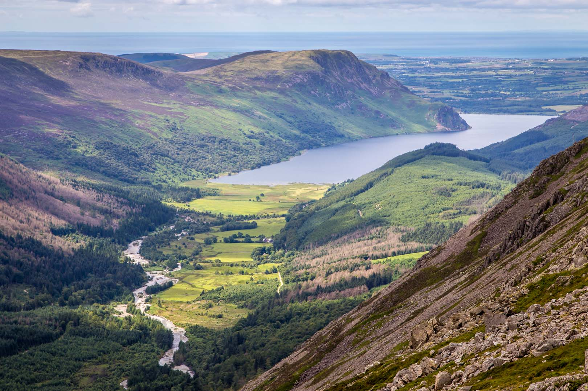
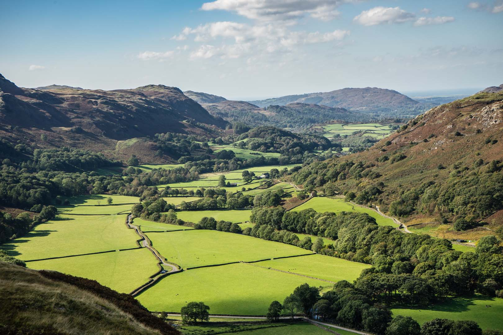
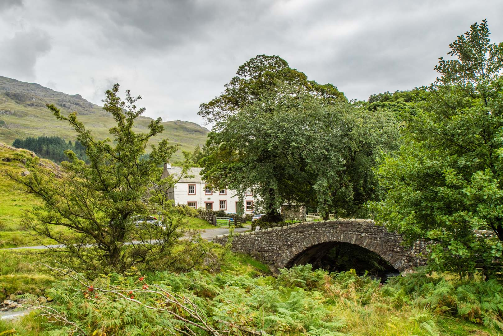

Welcome
Majestic fells, shimmering lakes, timeless heritage, and an enchanting culture - experience the awe and wonder of the Lake District. Escape to the Lake District, where adventure meets tranquillity. Year round there’s something for everyone. Whatever your pace, nature thrives here. With vast lakes, towering peaks, and 3,105 km of trails, it’s a haven for walkers, cyclists, paddlers, and explorers alike.

In winter, scale snow capped fells with expert guides, or unwind by one of England’s largest lakes. Explore breathtaking beauty and endless activities in the Lake District — Britain’s ultimate escape. Plan ahead to make the most of your journey in this iconic landscape so that you can enjoy the special qualities safely and responsibly. (ELD National park)
Located in northwest England, the English Lake District is a mountainous area, whose valleys have been modelled by glaciers in the Ice Age and subsequently shaped by an agro-pastoral land-use system characterized by fields enclosed by walls. The combined work of nature and human activity has produced a harmonious landscape in which the mountains are mirrored in the lakes. Grand houses, gardens and parks have been purposely created to enhance the landscape’s beauty.
This landscape was greatly appreciated from the 18th century onwards by the Picturesque and later Romantic movements, which celebrated it in paintings, drawings and words. It also inspired an awareness of the importance of beautiful landscapes and triggered early efforts to preserve them.
The Region
The area is made up of 16 bodies of water and over 350 fells, including the mighty Scafell Pike, Helvellyn and Skiddaw. Its unique landscape has been shaped by centuries of traditional upland sheep farming, including of the iconic Herdwick breed. There are a range of habitats within the Lake District including woodlands, valleys, lakes, tarns, high fells and coastal regions supporting a diversity of wildlife species. With millions of visitors every year, the area’s natural and cultural heritage provides memorable experiences and rich inspiration to those who spend time here.
Discover the Lake District’s unique heritage and historic landscape, and understand how we manage and protect its distinctive character, special qualities and World Heritage status. The world‑class cultural landscape of the Lake District National Park has been shaped by natural forces and centuries of agro-pastoral and local industry. Its rugged fells, dramatic valleys and historic remains together tell a story of beauty, resilience and global influence.

The Lake District was inscribed by UNESCO in 2017 as a World Heritage Site and cultural landscape. We are now England’s premier National Park joining Egypt’s pyramids, the Taj Mahal, Machu Picchu and Hadrian’s Wall. Learn more about our attributes of outstanding universal value and what this World Heritage Inscription means.
The Lake District National Park has a rich and diverse history of designed landscapes which contribute to our special qualities and outstanding universal value. They form part of our cultural landscape and tell part of the complex human story which shaped our National Park. Beyond the open access fells and commons of the Lake District, there are 2784 hectares of designed landscapes for recreational use. This includes both modern recreational areas, such as golf courses or urban parks, and ornamental parkland and gardens.
The People
There are around 500,000 residents who live in Cumbria, with around 40,000 people who call the Lake District National Park their home. Our local communities are made up of families, small business owners, young people, farmers, charity workers, volunteers and many others. One thing all Lake District residents have in common is their passion for this truly special place.
At the National Park Authority, we work together with local communities to help shape how this landscape is conserved, enhanced, understood and enjoyed. There are a range of methods through which we engage with residents, from supporting community projects and providing information on the management of rights of ways, to working with communities to develop local policies.
Rangers
Our rangers have a practical role in managing public access and our properties, including footpaths, gates, signs and bridges. They liaise and work with local communities, groups and parish councils to support with local Rights of Way issues.
Area rangers
Area rangers work with residents, businesses, community groups, land owners and farmers. They also work with other partners to deliver larger scale projects, such as Rusland Horizons and the Farming in Protected Landscapes grants scheme.

Communities help develop planning policy, their own Community or Neighbourhood Plans and get involved in planning applications. They may be involved as an individual, through a group, organisation or as a member of an elected body like a parish council. Our development management team works with residents, local businesses, parish and town councils and community groups to offer a proactive planning service.New local housing schemes, some of which include modern or iconic design schemes are examples of this. Our planning guidance for town and parish councils page has more details about how the process works. Our compliance planners work closely with communities and individuals to identify and resolve breaches of planning control. Three people working together in a modern office setting, gathered around computer screens with plants and office furniture in the background.
Sustainability
At the Lake District National Park, we take care of our flora and fauna and our unique landscape in a number of different ways. We work with our partners and communities with an emphasis on farming led nature recovery, to ensure that our habitats and species are better protected, and become more resilient and adaptable to the impacts of a changing climate. In this section, discover our nature recovery plan, learn about our wildlife and national nature reserves, what work at different scales is happening across the Park to help nature, and find out about funding opportunities for farmers and landowners.
Delivering farming, forestry, nature recovery and climate together
The Lake District National Park Partnership is working in collaboration with farmers and land managers across the National Park to deliver nature recovery and climate resilience projects while supporting the continuation of farming and forestry and conservation of cultural heritage.
National Nature Reserves
National Nature Reserves are key places for wildlife and natural features and help protect the most significant areas of habitat and of geological features in our Park. Discover Bassenthwaite Lake, our national nature reserve near Keswick. Trees and woodlands are valuable wildlife habitat and carbon store, as well as providing shelter for livestock, improving soils, and giving opportunity for farm diversification through agroforestry and timber. We provide information and funding advice on tree planting.
Water forms a key part of the Lake District’s landscape – our lakes, tarns, rivers and becks (streams) are one of the Lake District’s special qualities. The Lake District’s waterbodies face many pressures and these combined pressures threaten freshwater habitats and the species that depend on them. To protect these vital ecosystems everyone needs to work together to take action and ensure there is sustainable, integrated water management across our protected landscape.
- I climbed the dark brow of the mighty Helvellyn,
- Lakes and mountains beneath me gleamed misty and wide;
- - Sir Walter Scott